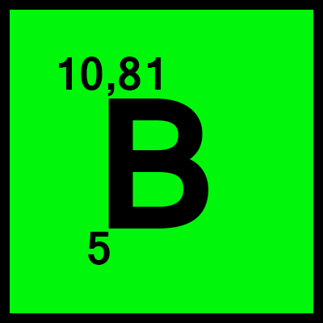
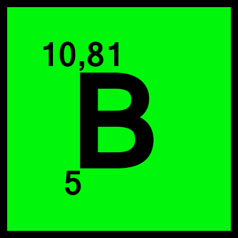

- Atomnummer: 13
- Atommassa: 26,981
- Ämnesklass: Posttranistionsmetall
- Grupp: 13
- Period: M(3:e Perioden)
- Block: P-blocket
- Aggregationstillstånd: Fast
- Elektronkonfiguration: 2 8 3
- Smältpunkt: 660°C (933 K)
- Kokpunkt: 2470°C (´2743 K)
- Trippelpunkt: N/A
- Kritisk punkt: N/A
- Densitet: 2,7 g/cm3
- Oxidationstillstånd: +III +II +I -I -II
- Elektronnegativitet: 1,61
- Jonisationspotential: 577,5 KJ/mol(1:a)
- Kovalent radie: 121+-74 pm
- Van der Waal radie: 184 pm
ALUMIUM